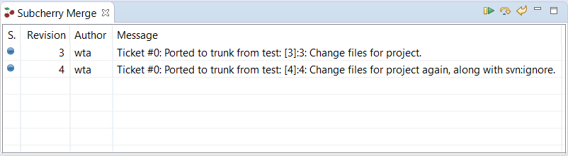
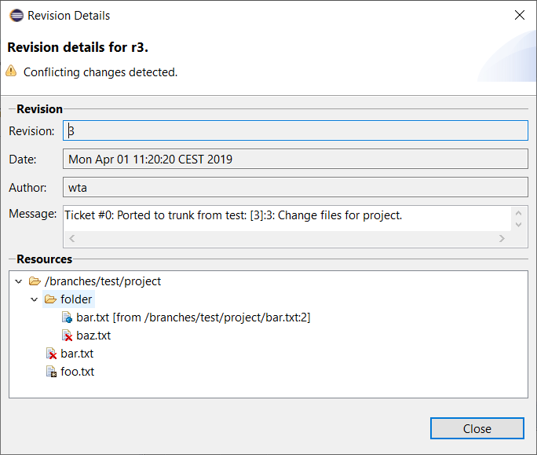
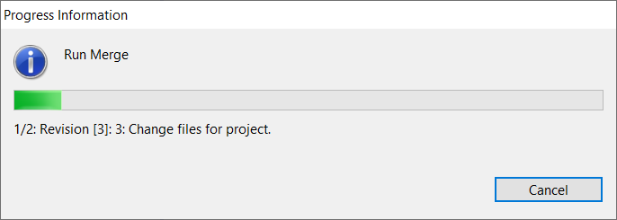
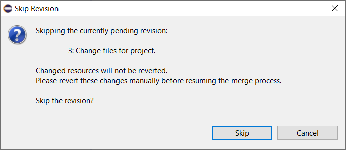
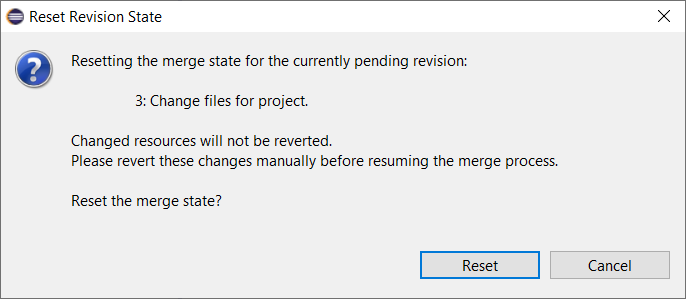
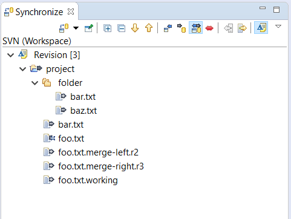
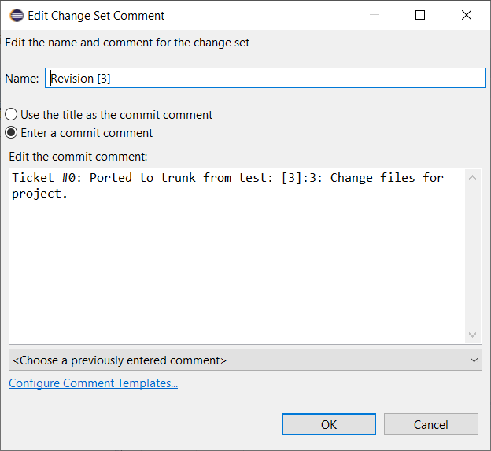
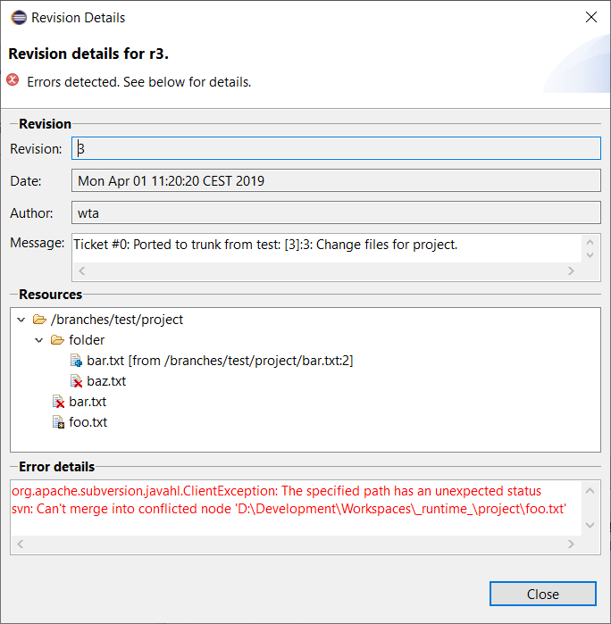

After successfully completing the Subcherry Merge Wizard the Subcherry Merge View is opened and ready to start the replay process. In this guide, users will learn how to use the view to replay the selected commit history.  The above screen shows a table overview of revisions which will be replayed in the course of the replay process. The displayed revisions are sorted in the order of their execution (which typically matches the ascending order by revision number). For each revision, an icon indicates the revision's replay state and provides a tooltip for states awaiting user action. The Message column displays a preview of the rewritten message which will be used when committing the revision upon replay.
The replay process can be manipulated using the buttons in the view's toolbar. The buttons availability depends on Subcherry Merge View to be the currently active view to prevent unwanted actions.
Every revision entry in the Subcherry Merge View can be double-clicked to show the revision details. The dialog displays the same information as the Subcherry Merge Wizard's Revision Details section.  In addition to the revision information and changes resources the above dialog also displays the revision's current replay state (and error messages if applicable).
To start replaying commit history the button in the view's toolbar can be pressed. This button is only active if the Subcherry Merge View is active and at least one pending revision is available.  The replay process will then be started and a progress dialog appears, reporting the replay progress to the user. The replay process can be cancelled using the dialog's Cancel button.
NOTE: Cancellation will take effect upon the replay process entering specific cancellation points which might take several seconds (e.g. when the task is waiting for the SVN server to response etc.).
Revision entries are processed in four steps:
NOTE: If the No Commit setting was enabled in the Subcherry Merge Wizard's Additional settings section, the last two steps are skipped.
Once a revision entry is processed successfully, the next one is replayed and so on. Successfully processed revision entries cannot be re-processed again. The replay process will continue running untilThe currently pending revision can be skipped by pressing the button. A dialog appears, explaining the consequences of revision skipping and prompting users to confirm their choice by pressing the Skip button. 
NOTE: Due to processing order, only the currently pending revision can be skipped, not an arbitrary one.
Skipping a revision for a replay process cannot be undone. However, since skipping is not persisted, the Subcherry Merge Wizard can be used again to select skipped revisions for processing.
To re-process the currently pending revision, users can press the button and confirming their decision in the newly opened dialog by pressing the Reset button. 
NOTE: Due to processing order, only the currently pending revision can be reset, not an arbitrary one.
Revisions are reset by setting their replay state back to pending thus allowing for error correction or change re-application. This is especially useful when replaying complex revisions with lots of conflicting resources requiring manual merging which is known to be error-prone.
In the course of replaying the revision history various conflicts may ocur when applying revision changes to the current workspace. In such cases the replay process is paused and the currently pending revision displays a warning icon. Conflict details can be inspected in the Synchronize view and resolved using subclipse tooling in-place.
If the No Commit setting was not enabled in the Subcherry Merge Wizard's Additional settings section, the changed resources are grouped in a separate change set.  The change set's name is applied using the following format: Revision [<number>]. To adjust the rewritten commit message users can open the change set's context menu by right-clicking it and selecting the Edit Change Set... option.  In the above dialog, the commit comment is the actual message which will be used to commit the change set. Changing the text and confirming it by pressing the OK button will store the new commit message until the change set is either reverted or committed.
NOTE: It is not recommended to commit the generated change sets manually since there is currently no technically sophisticated way to detect that. Manually committed change sets will result in the currently pending revision being switched to the Merged, commit pending replay state which might be quite confusing. In such cases, the currently pending revision can be Skiped since there are no outgoing changes after the entire change set has been committed successfully.
Resolving all conflicts detected when applying the currently pending revision to the workspace will cause the revision's replay state to be switched to Merged, commit pending and the automatic replay process can be resumed by pressing the button again.
NOTE: Trying to resume the automatic replay process with conflicts still remaining will have no effect.
Errors occurred while accessing the SVN repository, local resources, applying revision changes or committing them etc. will cause the automatic replay process to pause and the currently pending revision displaying an error icon.  Opening the revision's details dialog will reveal the most recently encountered error message in the Error details section.
NOTE: Due to the unexpected nature of this kind of errors, it's nearly impossible to detect when the error has been resolved. Hence, the automatic replay process can be resumed/retried while the currently pending revision is still in error state.